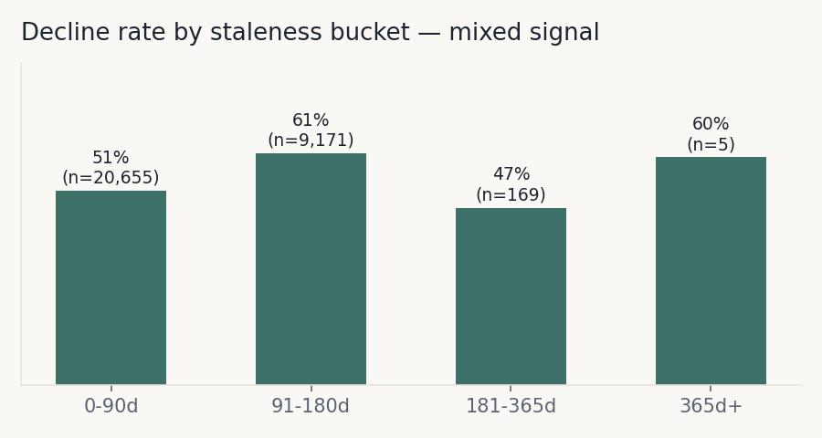
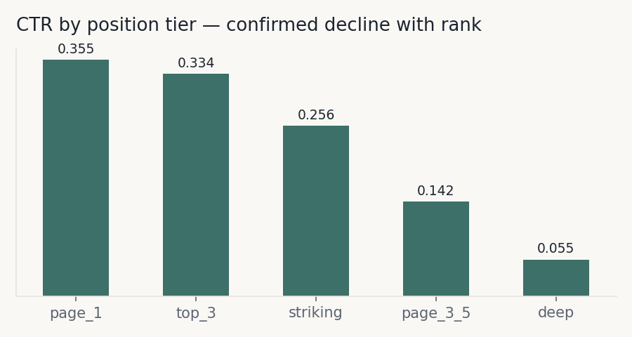
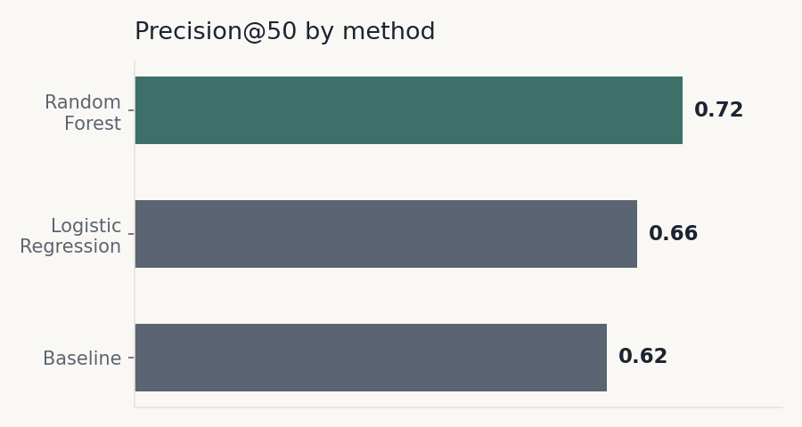
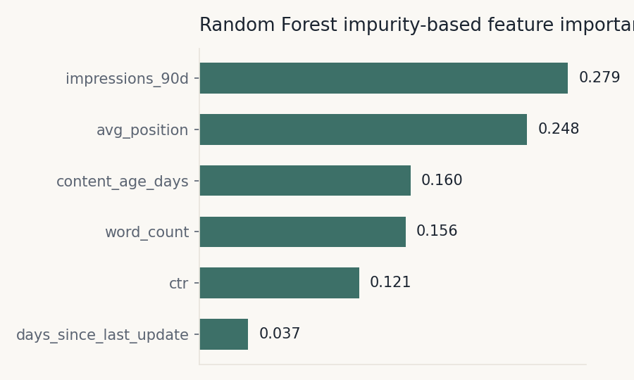

Decision. Which content pages a review team should prioritize refreshing first, given limited time and review capacity.
Who acts on it. A content strategist or reviewer working through a ranked queue, taking the top of the list first.
Cost of a wrong call. The cost cuts both ways. A false positive wastes limited reviewer time on a page that didn't need attention. A false negative leaves a genuinely declining page unaddressed, losing visibility until the next cycle. Because review capacity is fixed and small relative to total inventory, precision at the top of the list matters more than overall accuracy.
Source. FlyRank ML Internship starter dataset — 30,000 pages across 32 pseudonymized clients, aggregated over a trailing 90-day window.
Unit of analysis. One content item (page), for one client.
Label. is_declining_label, defined as trend_direction == "down" — impressions dropped more than 20% comparing the most recent 30 days to the prior 30 days, both windows sitting inside the same 90-day snapshot. This is a proxy for "needs attention," not verified ground truth, and it is worth being precise about what kind of label this is: it is retrospective, not a genuine forward-looking outcome. Every feature used to predict it (impressions_90d, avg_position, etc.) is a full 90-day aggregate that overlaps the same window the label is computed from — this is standard for the starter dataset's teaching purpose, but it means the starter-slice model result should be read as pattern recognition on a snapshot, not true future prediction. A genuinely forward-looking version of this test was run separately at warehouse scale in the data contract stage (Section 3, below) using March features to predict an April outcome, and that version held up (AUC 0.870 honest vs. 1.0 when a leaked feature was deliberately added).
Features. impressions_90d, days_since_last_update, avg_position, ctr, word_count, content_age_days — all knowable at decision time.
Excluded. trend_direction and trend_pct (label-derived, leakage risk), and any FlyRank product flags such as health_score — decision outputs, not raw observations.
This is a ranking/scoring problem, not pure classification. The output is a priority order across pages, evaluated by Precision@K rather than accuracy — since only the top of the list gets acted on.
A page qualifies if it is stale (≥180 days since last update) and still visible (≥500 impressions in 90 days). Its score is impressions_90d if both conditions hold, otherwise zero.
Staleness → decline rate: mixed. Decline rate rose from 51.2% (0–90 days, n=20,655) to 61.1% (91–180 days, n=9,171) — but dropped to 46.7% at 181–365 days (n=169), and the 365+ day bucket held only 5 rows. The defensible signal is "0–90 days vs. 91+ days," not a clean trend across every bucket.

CTR vs. position tier: confirmed. CTR declined cleanly from 0.355 at page-one positions (n=8,633) to 0.055 in deep positions (n=879), matching expectation.

A Random Forest (200 trees, class-balanced) was compared against Logistic Regression and the baseline rule, using a client-holdout split — grouping by client_id rather than splitting rows at random. A model tested on the same client's pages it trained on can look artificially strong by memorizing client-specific quirks rather than learning a pattern that generalizes.
None of the six features include trend_direction or trend_pct. Feature–label correlations were all modest (−0.164 to 0.090), consistent with genuine signal. A deliberate leakage experiment — adding a label-derived column built directly from the future value used in the label — pushed model AUC from an honest 0.870 to a perfect 1.0, confirming the leakage check itself works as intended.
| Method | Precision@20 | Precision@50 |
|---|---|---|
| Baseline (hand rule) | 0.50 | 0.62 |
| Logistic Regression | 0.65 | 0.66 |
| Random Forest | 0.75 | 0.72 |

Random Forest beat the baseline at both K values on the same test set — a consistent improvement, not a lucky top-20. A supplementary check reinforces this: the same model scored 0.900 Precision@50 under a naive random split, versus 0.720 under the honest client-holdout split. That gap confirms naive splits substantially overstate performance, and that 0.72 is the number worth trusting.
Reported below as Random Forest's built-in impurity-based feature importance — this describes what the model uses when making splits, not a causal claim about which factor drives decline in the real world.
| Feature | Impurity-based importance |
|---|---|
| impressions_90d | 0.279 |
| avg_position | 0.248 |
| content_age_days | 0.160 |
| word_count | 0.156 |
| ctr | 0.121 |
| days_since_last_update | 0.037 |

A stronger follow-up would compute permutation importance on the held-out split directly, rather than relying only on impurity-based importance from training.
16 of the model's top 50 picks were false positives — pages flagged high-risk that were not actually declining. These tended to share a pattern: relatively high days_since_last_update (often around 104 or 280 days) paired with middling avg_position (13–51). This suggests the model sometimes over-weights staleness–position combinations that don't reliably predict decline — notably, days_since_last_update carried the least importance of the six features, despite showing up repeatedly in the error cases.
This is an observed, directional, decision-support result on a 30,000-row teaching slice — not a proven causal claim. Correlational patterns here do not establish that refreshing a flagged page causes recovery, and the model has not been validated against the full warehouse. One additional concentration worth flagging: a single client accounted for the majority of top-ranked pages in the baseline queue, a pattern worth monitoring in any real deployment to avoid the model's output being dominated by one account's data profile.
Every page is tagged with one of four reason codes, so a reviewer knows why a page is on the list — not just that it is.
Strong decline signal and the content is stale. Refresh directly.
Strong decline signal despite a recent update. Investigate for an external cause before touching the page.
Some risk signals present. Monitor and revisit next cycle.
No action needed at this time.
An anonymized excerpt from the ranked queue, illustrating the shape of the final output a reviewer would work through:
| Rank | Content ID | Score | Reason | Action |
|---|---|---|---|---|
| 1 | content_a1f9… | 0.94 | HIGH_RISK_STALE | Refresh |
| 2 | content_7c3e… | 0.91 | HIGH_RISK_RECENT_UPDATE | Investigate |
| 3 | content_dd08… | 0.87 | MODERATE_RISK | Monitor |
| 4 | content_45b1… | 0.84 | HIGH_RISK_STALE | Refresh |
| 5 | content_9e22… | 0.81 | MODERATE_RISK | Monitor |
HIGH_RISK_RECENT_UPDATE captured the large majority of high-risk pages (14,261 vs. 84 in HIGH_RISK_STALE) — not because most declining pages were genuinely just updated, but because the 180-day staleness cutoff is strict and most high-risk pages simply haven't crossed it yet. A future version should treat staleness as a continuous weight rather than a single threshold.
Triage for a content strategist working through a limited review cycle. This narrows a large inventory to a short, ranked shortlist worth a person's time — it is not a final judgment.
days_since_last_update reflects a genuine content edit, not just a CMS metadata touch.Actual content rewriting or publishing, page deletion or merging, or any action taken solely from a model score without a human reading the page first. This tool ranks and flags — it does not decide or execute.
All notebooks, data contracts, and metrics referenced in this paper are available in the project repository.
w01_research_question.ipynbw02_ml_task_framing.ipynbw03_data_contract.ipynbw04_baseline_score.ipynbw05_model.ipynbw06_validation_audit.ipynbw07_action_playbook.ipynbcapstone.ipynbFull repository: github.com/sarmad341/flyrank-internship-01